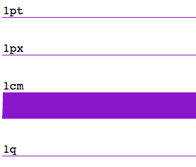

CSS Units
As a developer, sometimes you need to be flexible when it comes to sizing. Sometimes your designer won't budge
when it comes to making the size of the logo be relevant to the rest of the site. So here you are, deciding whether you
should use a variety of units types or make all elements use the same units. Today I'd like to share a quick breakdown of some
of the units CSS has to offer. This is not an exhaustive list, but I'll highlight some common units and a couple unique ones.
Types of units
Firstly, units are either relative or absolute.
A quick explanation...
A relative unit is determined by values that are relative to another length.
An absolute unit is when a property's output is known/static. They cannot scale in size.
Length
Many properties in CSS use length as values. For example, width, height, box-shadow, padding, margins, font-spacing...
Here are absolulte and relative length units:
- Absolute length units: 'q', 'in', 'cm', 'pt', 'px'
- Relative length units: 'em', 'rem', 'ex', 'ch', 'vw', 'vh', 'vmin', 'vmax'
Below are examples of absolute and relative lengths.
Absolute Lengths
pt
Points are used traditionally in print media(i.e. using a word processor to print an essay on paper).
1pt == 1/72 of 1in
px
The pixel. To popular dismay, the CSS pixel length doesn't equate to the actual pixels used to render images on your screen/device.
1px == 1/96th of 1in
cm
Yup, cm stands for centimeter. Since 98% of the world uses the metric system, using cm could be helpful when you know the
physical properties of the output medium.
1 cm == 37.8 px
q
'Quarter of a millimimeter' is only available in Firefox.
1 q == 1/30 of 1cm
- length
- percent
- fraction unit
- measurement of content
Length
Lengths are either horizontal or vertical.- px
- em
- rem
- vh
- vw
- px
- em
- rem
- vh
- vw